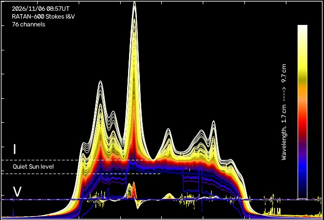
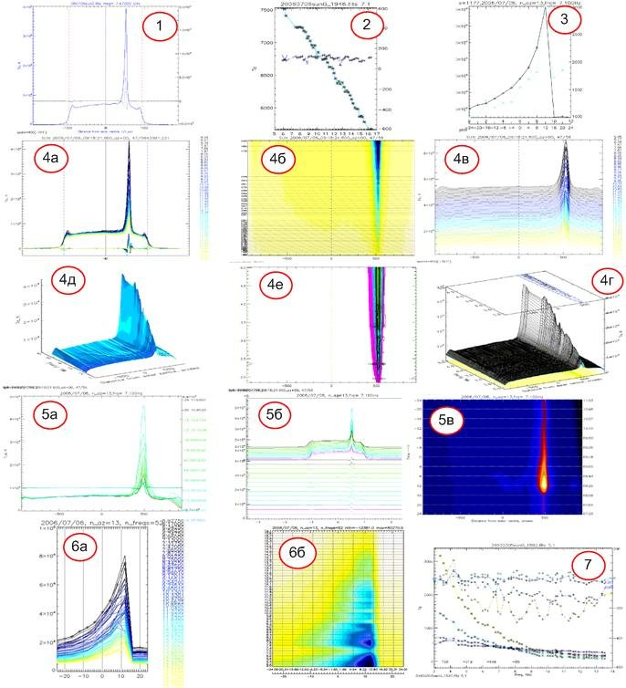

Наблюдения и данные
Как наблюдают Солнце на РАТАН-600 и что попадает в архив
От сеанса наблюдений и регистрации до обработанного скана level2, параметров локальных источников и данных других служб, которые нужны прогнозу.
Режим наблюдений
Солнце наблюдают на Южном секторе с Плоским отражателем (перископическая система Крауса) около местного полудня — 9:00 UT ± 2 часа. Источник проходит через неподвижную диаграмму направленности, и за проход получается одномерный скан Солнца на многих длинах волн одновременно, в правой и левой круговой поляризации.
Перемещение облучателя по дуговым рельсам позволяет квазисопровождение Солнца до 4 часов: в многоазимутальном режиме это серия сканов с разных азимутов — временной анализ активных областей. В периоды летнего и зимнего солнцестояния тот же приём даёт азимутальный синтез — двумерную карту Солнца на десятках длин волн за день.
Серии многоазимутальных наблюдений удобно искать на странице поиска фильтром «наблюдений в день».
Путь скана: от сеанса до сайта
Задание и сценарий наблюдения
Планировщик на облучателе №3 каждые 20 секунд перечитывает файл-задание, сортирует строки по дате и берёт ближайшее задание на текущую дату. Строка задания содержит дату, время начала ожидания, точное время старта регистрации, имя файла сценария, дату и время кульминации, источник, азимут облучателя и высоту Плоского отражателя; дальше обычно идут эфемериды Солнца, нужные для обработки.
2006/06/30 11:27 11:28:10.600 z_sun_480 2006/06/30 11:32:10.600 sun +24 71.705002 …
Сценарий — список команд с отсчётом в секундах от старта: включение и выключение модуляции, автоматической регулировки усиления и генератора шума (калибровочные «ступеньки» в начале и в конце записи), начало и конец записи файла и, последней командой, преобразование записи в FITS с интегрированием по 30 отсчётов.
История облучателя и регистрации
- 2005–2006введена нынешняя система регистрации (описание: Балдин, Гараимов, 2011).
- 07.2009новая версия программы эфемерид EFRAT (сектор эфемеридного обеспечения ГАО РАН, В. Н. Львов).
- 08.2009новая система регистрации: 112 каналов одновременно, от 750 МГц до 18 ГГц.
- 13.03.2010в фокусе — плоские двухзаходные спирали; центры спиралей 3–18 ГГц разнесены на 27 мм (сдвиг −180 отсчётов при переводе в FITS), диапазона 0,75–3 ГГц — на 180 мм (−1110 отсчётов).
- 28.09.2011установлены синусные фокальные антенны («зигзаг»); правая и левая поляризации сфазированы, 3–18 ГГц в фокусе, 1–3 ГГц вынесены на 112 мм.
- 2016в строй вступил спектрально-поляризационный комплекс высокого разрешения (СПКВР), см. Инструмент.
Первичная обработка
Каждый поступивший скан автоматически проходит первичную обработку — стандартные для солнечных данных процедуры и специфические для РАТАН-600:
- Отбраковкадефектные, непригодные для анализа каналы
- Артефактыудаление записей генератора шума и т. п.
- Уровень небавычитание фона
- Совмещение R и Lсдвиг каналов поляризаций
- Параметры СтоксаR, L → I, V
- Центр Солнцакоррекция положения
- Радиус Солнцакоррекция масштаба
- Калибровкаперевод в яркостную температуру
Результат — архив второго уровня (level2): файлы с суффиксом _out. Над level2 на сайте доступны дальнейшие действия: вычитание спокойного Солнца, совмещение сканов разных азимутов, вычитание соседних волн, поиск и гаусс-анализ источников, спектры, Фурье- и вейвлет-анализ, сравнение с данными других обсерваторий (Анализ данных).
Уровни данных и файлы
| Уровень | Что это | Где лежит | Время в имени |
|---|---|---|---|
| level1 | запись в FITS сразу после регистрации: каналы R и L, антенная температура, без обработки | /data/ratan_600/ГГГГ/ММ/; новый комплекс — также solar.sao.ru/data | местное (UT+3) |
| level2 | после первичной обработки: I и V, яркостная температура, плохие каналы удалены | /data/ratan/ГГГГ/ММ/, имя …_out.fits | местное; в заголовке — UT |
Имя файла level2 — ГГГГММДД_ччммсс_sun0_out.fits, например 20261106_115716_sun0_out.fits: наблюдение 6 ноября 2026 г. в 11:57:16 по местному времени (08:57:16 UT). Необработанные данные level1 без опыта легко интерпретировать неверно, поэтому на старом сайте их скачивание требовало авторизации.

Формат файла level2
Основной массив — float32 размера каналы × 2 × точки: для каждого канала два столбца, I и V (при FLAG_IV = 0; при 1 — R и L), в кельвинах яркостной температуры. Каналы упорядочены по возрастанию частоты; в 2026 г. после отбраковки остаётся обычно 76–77 каналов из 90.
| Ключ / колонка | Смысл | Пример (06.11.2026) |
|---|---|---|
DATE-OBS, TIME-OBS | дата и время наблюдения, UT | 2026/11/06, 08:57:16.140 |
NAXIS1 | число точек скана | 2407 |
CRPIX1, CDELT1 | точка центра диска и шаг, угл. с | 881.57, 2.883″ |
SOLAR_R, SOLAR_P, SOLAR_B | радиус Солнца (″), позиционный угол и широта центра диска | 968.03″, 23.6°, 3.9° |
AZIMUTH, ALTITUDE | азимут облучателя и высота Солнца | 0°, 30.12° |
таблица Scan_params: FREQ | частота канала, ГГц | 3.094 … 17.906 |
TQSUN | температура спокойного Солнца на частоте канала, K | 6108 … 4718 |
THETA, KFLUX | ширина диаграммы и коэффициент перехода K → с.е.п. | —, 0.044 … |
Калибровка
Эффективную площадь большой антенны практически невозможно измерить напрямую, поэтому измерения относительные, и инструмент регулярно калибруют по опорным источникам: радиоисточнику в Крабовидной туманности (Tau A, известный спектр потока) и Луне (яркостная температура около 220 K на всех волнах, антенная — около 110 K). Связь между ними устанавливается через запись чёрного тела и генератора шума. Так находят коэффициент перехода от антенных температур к потокам kflux; он отражает эффективную площадь на данной частоте (КПД антенны на разных частотах — 20–80%).
Скан, записанный в антенных температурах, масштабируют одним из двух способов:
- По спокойному Солнцу. Уровень точки на спокойном участке диска приравнивается табличной температуре спокойного Солнца на этой частоте (
tqsun). Таблицу получают по наблюдениям Луны: генератор шума калибруют по Луне, запись Солнца — по генератору шума. - По полному потоку. Интеграл под сканом приравнивается полному потоку Солнца, измеренному на малых антеннах (поляриметры Нобеямы, RSTN).
Параметры спокойного Солнца и методика калибровки подробно изложены в диссертации В. Н. Боровик (1997): яркость спокойного Солнца — от 10 400 K на 2 см до 131 700 K на 31,6 см.
Параметры локальных источников
Одномерный скан — результат прохождения источника через неподвижную диаграмму. По нему определяют поток, размер, яркостную температуру и степень поляризации локальных источников, предполагая, что их профили близки к гауссиане с высотой A и полной шириной на половине максимума B:
F(x) = F⁰ · exp(−2,773 · x² / B²) — профиль; F⁰ в Ян/угл. с, B в угл. с
F = 1,064 · F⁰ · B / 10⁴ с.е.п. — полный поток (площадь под гауссианой)
p = F⁰V / F⁰I — степень поляризации (ширины профилей в I и V практически совпадают)
B₀ = √(B² − θ²) угл. с; I⁰ = F⁰ · B / B₀ Ян/угл. с — истинные размер и высота; θ — ширина диаграммы
Tb⁰ = 1,443 · I⁰ · λ² / B₀ K — яркостная температура (λ в см), для круговой двумерной гауссианы ширины B₀
Формулы — по Богоду и др. (1987). Поток затем умножается на коэффициент kflux канала.
Свёртка двух гауссиан — гауссиана, поэтому истинный размер получается вычитанием ширины диаграммы в квадратах. Ширина диаграммы приблизительно равна θгор(″) = 0,85·λ(мм), точнее — по расчёту ДНА.
Вспомогательные данные
Прогноз строится по сканам РАТАН-600, но для отождествления источников и проверки нужны данные других служб. Сервер их получает сам по расписанию (время МСК):
| Данные | Источник | Когда | Таблица БД |
|---|---|---|---|
| сканы РАТАН-600, level1 | solar.sao.ru (rsync по ssh) | каждые 2 мин, 10–16 ч | RAT_FILE, RAT_FITS, RAT_AR_SPECTR |
| активные области: номера, положения, площади (SRS) | NOAA SWPC | каждые 30 мин, 9–16 ч | NOAA |
| вспышки: время, класс, положение (SGAS) | NOAA SWPC | каждые 30 мин, 9–16 ч | SOLAR_FLARES |
| прогноз NOAA (RSGA) | NOAA SWPC | 10:00 и 13:00 | текст на странице прогноза |
| поток на 10,7 см | Penticton (spaceweather.gc.ca) | 17:06 | PENTICTONDAILYFLUX |
| потоки NoRP 1; 2; 3,75; 9,4 ГГц | обсерватория Нобеяма | 06:50 (месяц выкладывается после окончания) | NORP_TFLUX |
| рентген GOES, снимки SDO/AIA, HMI, Hinode/XRT | solarmonitor.org | каждые 35 мин, 9–18 ч | файлы |
| Hα BBSO, SDO AIA 193 Å и HMI; прогноз ИЗМИРАН | bbso.njit.edu, sdo.gsfc.nasa.gov, izmiran.ru | 10:00 и 13:00 | файлы |
| журнал наблюдений РАТАН-600 | www.sao.ru/hq/sun | 15:55 | журнал |
Часть источников закрыта: наблюдения NoRH (Нобеяма) прекращены в марте 2020 г., со снимков solarmonitor убраны GONG и протоны GOES, не загружаются EIT/XRT с umbra, карты IfA и данные Нансе. Поэтому за прошлые годы эти таблицы заполнены неравномерно. Таблица PROGNOZ — архив прогнозов сотрудников, который вёлся вручную.
Программы обработки
| Программа | Что делает |
|---|---|
| Анализ данных (этот сайт) | архив level2 по годам и месяцам, скан как в прогнозе, каналы, I и V, спокойное Солнце, соседние волны, спектр |
| WorkScan (В. И. Гараимов) | интерактивная обработка массивов одномерных сканов под Windows; основная методика — Богод и др. (1987) |
| Sunviewer, Dataviewer | просмотр данных нового комплекса (fast acquisition) |
| ratanpy | библиотека Python для данных нового комплекса РАТАН-600 |

Литература
- Балдин С. В., Гараимов В. И. Радиотелескоп РАТАН-600 в 24 цикле солнечной активности. III. Система сбора данных и управления солнечным спектральным комплексом. Астрофиз. бюлл., 66, № 3 (2011).
- Тохчукова С. Х. IV. Информационная система наблюдений Солнца на РАТАН-600. Астрофиз. бюлл., 66, № 3 (2011); Astrophys. Bull. 66, 409–419.
- Богод В. М., Ахмедов Ш. Б., Боровик В. Н. и др. Структура активных областей на Солнце по наблюдениям на VLA и РАТАН-600 в июле 1982 г. Ч. I. Астрофиз. исслед., 25, 105–134 (1987).
- Опейкина Л. В., Майорова Е. К., Коржавин А. Н. К вопросу об оценке плотности потока источников солнечного радиоизлучения. Астрофиз. бюлл., 70, № 3, 394–402 (2015).
- Гараимов В. И. Обработка массивов одномерных векторов данных в ОС Windows. Программа WorkScan, версия 2.3. Препринт САО РАН № 127Т (1997).
- Боровик В. Н. Докторская диссертация (1997): параметры спокойного Солнца и калибровка данных РАТАН-600.